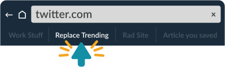
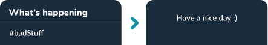

The Twitter trending section is full of very bad stuff, and you're forced to look at it in the desktop web app.
This uses a bookmarklet to remove the trending section on Twitter. If you use a screen reader and have an idea on how to make this more accessible, let me know! I'm @diana_perkins on Twitter.
Drag this link to your bookmarks menu
Replace TrendingClick the bookmark when you're on twitter.com and the trending section sucks.
It will replace it with: "Have a nice day :)"
How it started ... how it ended
